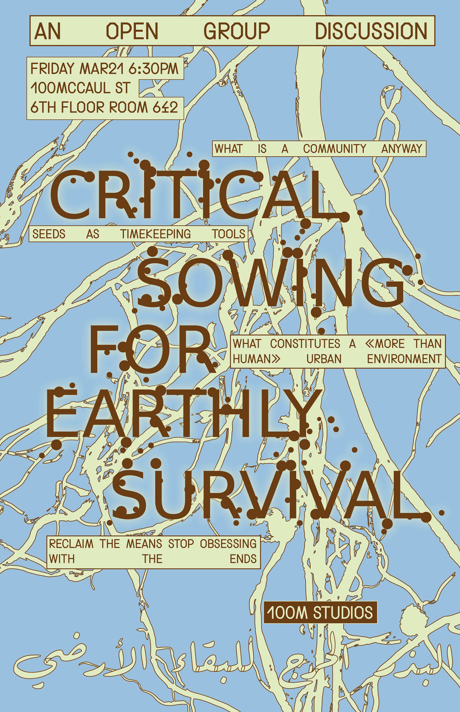
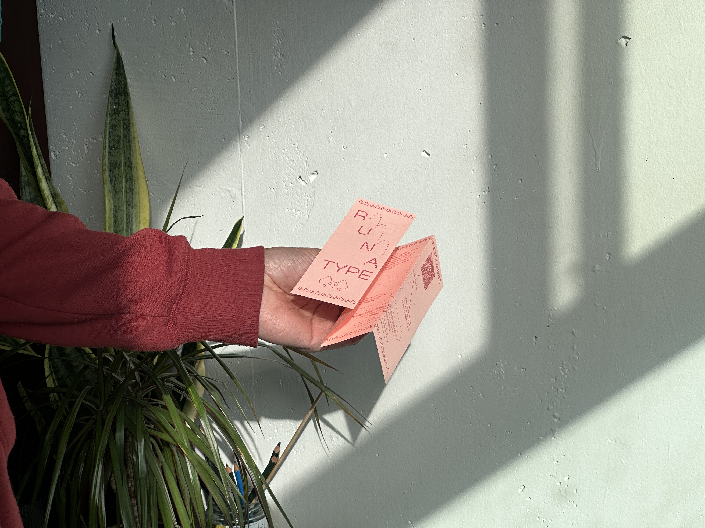

Mar 19, 2025
Weekly Check-in
I keep forgetting to update this because my head is so full of stuff. So I'm going to make this a weelky check in thing, not just for documentation purposes, but also to practice VIM and for my future self.
Selma and I are hosting a workshop this week. It centeres around discussion and dialouge so there isn't much for us to do other than to propagate ideas and get people talking to eachother about things that they deem important in the context of the burning world and living in one of the most industrialized places in the world. Thinking about how to sever hierarchy in these kinds of situations, the goal is not to go up and present, but rather, be apart of the conversation. We can only do that when we know nobody thinks of us as a "speatheadder" of the workshop and we don't impost that onto ourselves as we converse. An idea was to have an omnipotent narrator voice over the whole thing. That way, Not only Selma and I get to be part of the workshop (mentally) completely, but there will also be a factor of uncontrollability, taking away the need for control and directionality on our parts.
Feb 27 1:44am
Morning everyone!! It's been a while. I recently got my Holga film
developed! The
Holga
is really interesting because it's actually a plastic "toy camera",
introduced in Hong Kong to bring photography to the working class
during a technological boom and trend in photography as a hobby.
The camera was introduced to me by Roderick Grant for
the reason that it was an affordable, beginner friendly camera that
who's beauty is in it's constraints. I picked one up for my birthday
from a guy on facebook marketplace and took it to Dubai where I took
most of the pictures and they came out better than I could have
imagined


BTW!! I've gotten better at using VIM, I made a little cheat sheet on my sticky note app and made it so it's on top of vs code so that's been suuper helpful.
Feb 13, 2025
 I made a type specimen for my typeface and printed it out on pink paper!! I love working with colored paper,, can never go back to white tbh.
Feb 12, 2025
I'm currently typing this using VIM which is kinda difficult becuse I'm not allowing myself to use any of the arrow keys or my trackpad whilst typing in my html file. Its hard to get used to but I'm already betting better compared to two days ago. I type better when im not thinking too hard about it becuas my fingers are already used to it. Our body is so phenomenal in thay way...So much memory, so much capacity, so much love!!!
Feb 11, 2025
How does one make written notes "real" is the question Ive been pondering. I have a plethora of information, theory and research I've collected from my independant study last year but I am struggling to find a medium that makes clear the effort. The visual language is a mirror. —11.02.25
Feb 8, 2025
Yooo look who finally got a domain name!! I'm still unsure about it, but it was the cheapest from my top three options. The other ones were omama.run, omama.place... I still keep typing and telling people its omama.cafe r.i.p.
I'm also working on thesis a lot these days, gotta sit down this week and work on ISP (wtf i sound like anisha)
My thesis has been going really well tho, This week I've been working with Zaid and Saad. With Zaid we're making a soundscape for his screenplay. I recently read some of Naomi Waltan-smith the author of Turning Ears; Or, Ec(h)otechnics this sentence from one of per papers resonated with me:
"Human ears evolved for frontal communication with other humans and away from lupine conical ears that picked up the environment. Humans have to decide which sounds we turn toward and how to deal with them by physically pivoting."
Zaid and I decided not to use any samples in our soundscape, chosing instead to create the sounds using miscellaneous objects such as glass vases, rolls of tape, water and our own vocals. Zaid remarked that the sounds we were producing using these objects gave him vivid mental imagery abou what he wanted to add to his screenplay. So instead of trying to emulate the audio usingthe screenplay, we decided to work the other way around and use the sounds as an inspiration for what is to come as our "artifact".
Jan 15, 2025
Aaryans new blog
Aaryan recently started a feed of his own [so fun] I love this concept of articulation through documentation. I think we should all do it. Check out his feed here —15.01.25
Jan 15, 2025
Finally got time to work on updating the site, thinking about what kind of things to add to it —15.01.25
Dec 19, 2024
This site was possible thanks to the wonderful sadgrl.online ♥ you pookie! —19.12.24
Dec 19, 2024
This site was possible thanks to the wonderful sadgrl.online ♥ you pookie! —19.12.24
Jan 15, 2025
Finally got time to work on updating the site, thinking about what kind of things to add to it —15.01.25